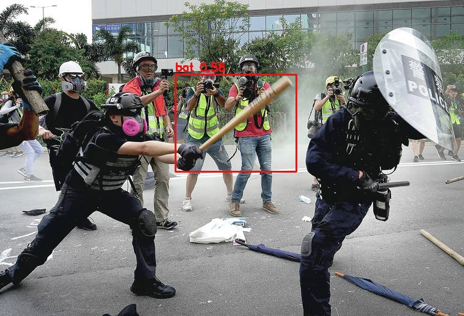
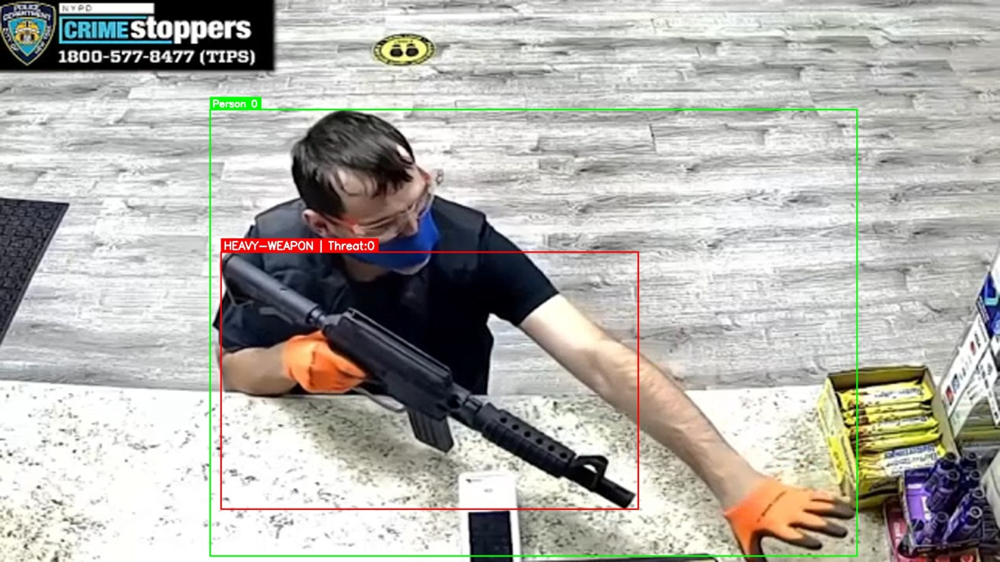
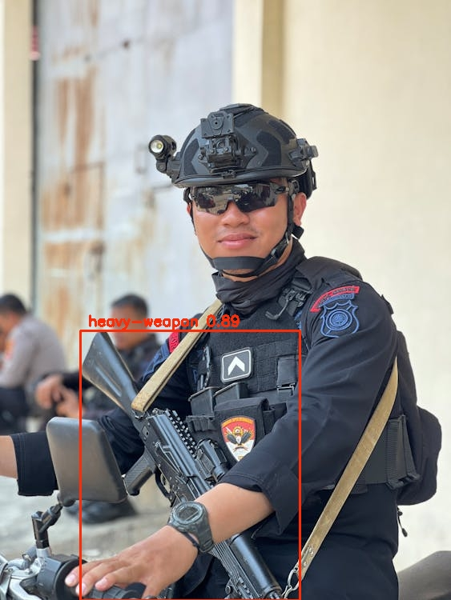
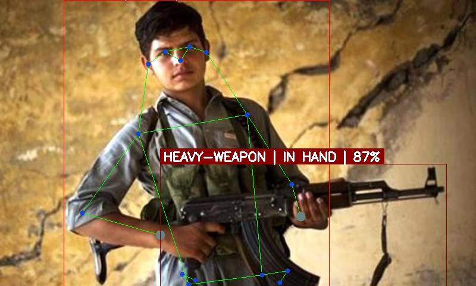
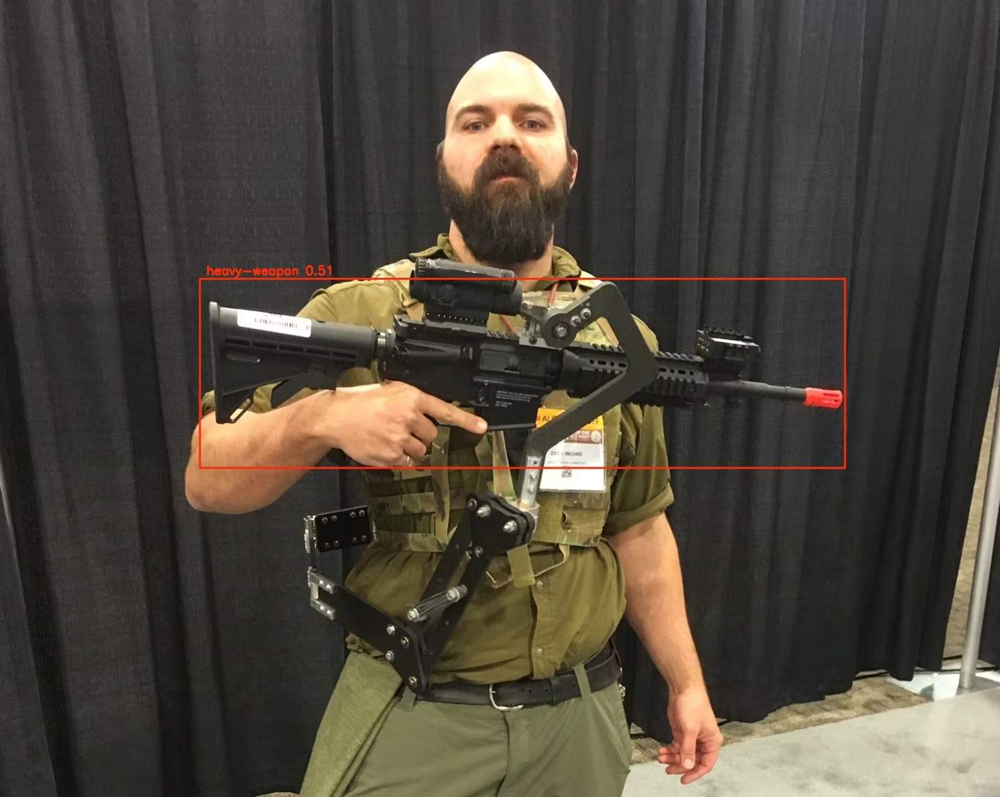
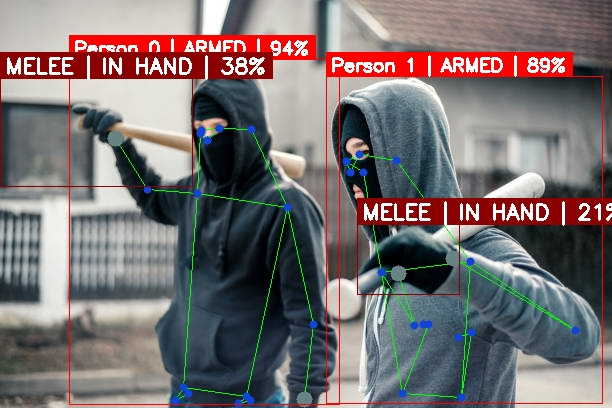
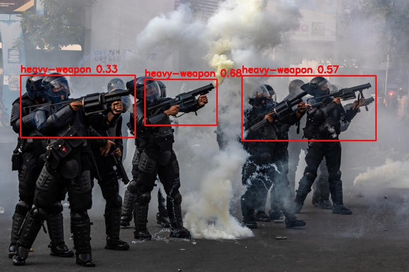
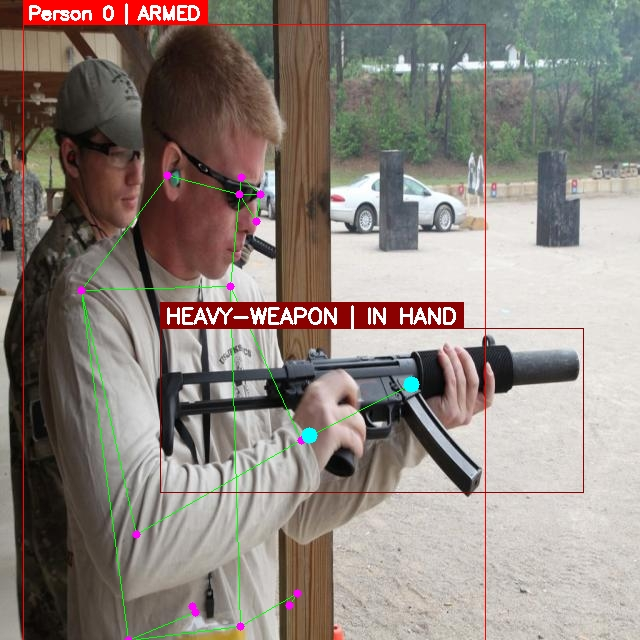

Detection Outputs
Model Output Samples
Annotated frames showing bounding boxes and confidence scores on detected weapons across diverse conditions — indoor, outdoor, low-light, and occlusion scenarios.











Live Demos
Detection Demo Videos
Full video inference runs with real-time bounding box overlay and confidence annotations.
Technical Deep-Dive
Project Overview
This system trains a YOLOv8 model to detect dangerous weapons — including firearms, knives, and blunt objects — directly from video frames in real time. The goal is to provide an automated first-layer alert mechanism that can augment human monitoring in security-critical environments.
The pipeline processes each frame through the YOLOv8 detector, generates bounding-box predictions with class labels and confidence scores, and overlays the results onto the output frame. The annotated video stream or image set is then saved for review.
Key Features
- Real-time detection across multiple weapon categories
- Frame-by-frame bounding box annotations with confidence scores
- Supports video file, camera stream, and image batch inputs
- Configurable confidence and NMS IoU thresholds
- Output saved as annotated video and individual image frames
- Sliding frame buffer for temporal smoothing of detections
Training Pipeline
- Base architecture: YOLOv8 (Ultralytics) pretrained on COCO
- Custom weapon dataset annotated via Roboflow with class-specific bounding boxes
- Transfer learning with frozen backbone layers for initial epochs
- Augmentation: Mosaic, scale jitter, brightness/contrast, horizontal flip
- GPU-accelerated training on Google Colab / Kaggle
Applications
- CCTV surveillance and smart security systems
- Airport and event venue security screening
- Law enforcement situational awareness tools
- School and public building safety monitoring